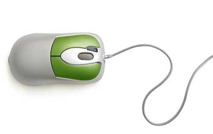
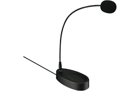
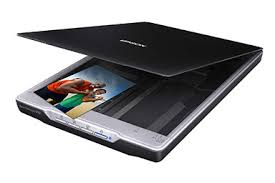
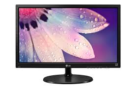
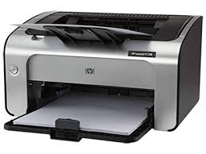

General presentation of the computer and its components
What is a computer
In the simplest terms, a computer is basically an electronic device that is capable to accepting data and process it to create information with the help of instructions stored in its memory. This information created can then be stored for future use. The data it accepts is called input while the information created is called output. These instructions which the computer uses to process the data are referred to as programs. They enable computers to perform a wide range of tasks.
Computers vary from the obvious laptops and desktops we know of to telephones and various embeded systems and chips which control electronic devices. In the current age, computers are part of almost every electronic ranging from automated systems to even some semi-manual systems.
Brief history of the computer
The abacus, an arithmetic device used as early as 2400BC was the machine which opened the door to the develpment of the computer. After it came other forms of boards and tables aimed at easing arithmetical tasks. These included the Antikythera mechanism, the planisphere, sector and planimeter amongst others.
In the 19th century, an English mechanical engineer by name Charles Babbage developed the first electronic and programmable device which he called the difference engine. As a result of his works on this machine, he is today known as the father of the computer. Further development of this machine resulted in the creation of the analytical Engine. However, these machines still presented great challenges like their sizes and the fact that each part of the machine had to manufactured by hand. The 20th century saw the development of more sophisticated analog devices based on changing electric signals. These were however not programmable.
Digital computers started appearing in the 1930s first with the Torpedo Data Computer developed by the US navy essentially based on vacuum tubes followed by Konrad Zuse's Z2 and Z3. Further developments resulted with computers based on transistors which were very much faster than their vacuum tube counterparts and lateron as we have today, integrated circuits. It should be noted that each of these developments has featured decrease in size and increase in processeing speeds. Today, we have computers which are 20 times smaller than the Z2 but having speeds which cannot be compared to those offered by the Z2.
Nowadays research and develpment has permitted the insertion of computers in almost every domain of human life.
For a detailed history of the computer, visit The computer on Wikipedia.
Components of a Computer
The various components of a computer can be divided into two major groups: software and hardware. Hardware refers to the physical parts which make up the computer and which the user can directly manipulate. They are basically the parts which we can see and touch. Software on the other hand are programs or set of programs in the computer which control to hardware and permit the user to perform tasks with the computer. This section is particularly dedicated to the hardware components. The software components are viewed in a different lesson.
Hardware components of a computer can be divided into three major groups. These includeinput devices, processing devices and output devices. Below are the various hardware components presented according to their respective groups.
- Input devices
-
These are devices which are used to enter data into the computer. Examples include:
-
Keyboard

This is the primary input device of a computer made up keys which when pressed send electronic signals to the computer telling it to execute a specific command. It is composed of the function keys(F1-F12), the alphanumeric keypad(made up of leters A-Z and numbers), the numeric keypad(usually found to the right and contains only numbers) and modifier keys(CTRL, SHIFT, ALT). A keyboard layout is the manner in which the letters and symbols of the alphanumeric keypad are placed. Common layouts are the QWERTY for English keyboards, AZERTY for French keyboards e.t.c. It is used for typing.
-
Mouse
A mouse is an input device which permits computer users to point, select, click, right-click and move information on the computer screen. It is made up basically of two buttons: the right and the left mouse buttons which permit us to right-click and click respectively. Some mice have a middle button(often more like a wheel) which is used for scrolling.
-
Microphone
This device permits users to capture sound and enter it into the computer. It can be used to record songs as well as to make calls using the computer. Micropones can be of various types: on headset, wired, wireless or desk microphones
-
Scanner
A scanner is used to create a digital image of a printed image or document. It permits us to directly create digital documents from already printed ones. It functions like a digital camera creating softcopies of images immediately. It should be noted that some scanners have the ability to create a text document from the scanned file as they are equipped with tools to recognize the printed characters.
-
Touch screen
This is a technology which permits users to enter infomation using their hands or fingers by simply touching a screen. The screen may display a keyboard which we use to enter the information or simply options for us to select. It is widely used in mobile phones nowadays.
-
Webcam
These are special cameras for computers. They can be used for taking pictures, making video calls as well as recording video clips on the computer.
-
Trackball
-
Joystick
-
- Processing devices
- These are devices which are used to convert the data gotten from input devices into useful information. The main device which is found at this level is the computer processor. The processor is the "brain" of the computer as it is the only component which is capable of performing all the complex tasks which change data into information.
- Output devices
-
After the input and processing, the resulting information needs to be presented to the user. This is done by output devices. The collect the information from the computer and present it to the computer user. Below are some examples of output devices:
-
Monitor
Commonly reffered to a Visual Display Unit (VDU), a monitor is a device made up of a screen on which it forms images from dots called pixels. These images depend on the type of information received from the processor. The monitor is the main output device of the computer and permits users to follow up their work on the computer. The two main types of monitors are the Cathode Ray Tube (CRT) monitor and the Liquid Crystal Display (LCD) monitor.
-
Printers
A printer is an output device which is used to put out information on a paper. There are two main types of printers: Impact printers which print information by striking a ribbon against the paper and Non-impact printers which use other methods other than the ribbon to print out information.
-
- Storage devices
- These are devices which are used to store the results of processing operations for future use. They help us to keep information so as to have access to it in the future when we need it. Example include Hard drive, USB drive, SSD, etc. These devices are better looked at on the topic on computer memory.
Functionalities of a computer
- Accepts input in the form of data
- Processes or transforms the received data to information
- Generates output from the information
- Stores the processed information for future use.